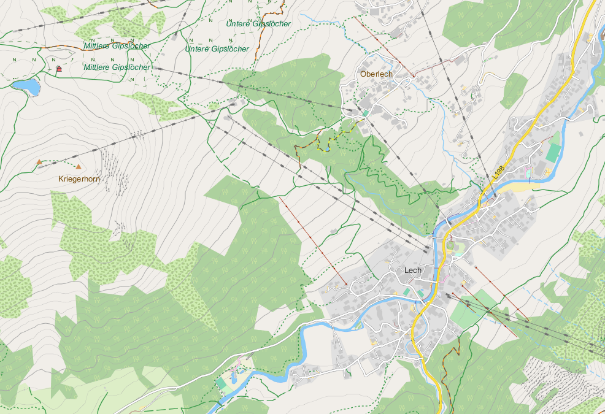

Die Freizeitkarten richten sich an Nutzer von Android-Geräten. Die Offline-Vektor-Karten basieren auf den Projekten OpenStreetMap (OSM) und Mapsforge. Sie können zusammen mit verschiedenen Android-Karten-Apps (z.B. Locus Map, OruxMaps, c:geo, CacheBox, Cruiser, ...) benutzt werden.
Die Freizeitkarten bieten eine enorme Fülle an Informationen. Viele davon müssen jedoch zunächst durch den Kartenbenutzer aktiviert werden. Analog lassen sich störende Kartenobjekte auch deaktivieren. So kann je nach Einsatzzweck eine optimale Kartenanzeige erreicht werden.
- Höhenlinien ... sind in der Stadt verwirrend, im bergigen Gelände aber unverzichtbar.
- ÖPNV ... Bahnhöfe, Haltestellen/-Punkte und U-Bahneingänge sichern das Fortkommen.
- Rad- oder Wanderwege ... können zur besseren Sichtbarkeit/Planung hervorgehoben werden.
- ...
Alle Kartenapps verfügen über entsprechende Einstellmöglichkeiten zur Aktivierung und Deaktivierung von Kartenfeatures. Kartennutzer sollten sich mit dieser Funktion unbedingt vertraut machen.
Lech, Vorarlberg, Österreich: Lech ist ein beliebter Ausgangspunkt zum riesigen Skigebiet Arlberg.
Die Freizeitkarten basieren auf den Daten des OSM-Projektes. Sie wurden als Universalkarten entwickelt, für
- die Freizeit
- und bei Outdoor-Aktivitäten.
Eigenschaften der Karte:
- für Autofahrer, Radfahrer und Fußgänger geeignet
- topografische Karte mit integrierten Höhenlinien (Äquidistanz 20 Meter)
- Kartenelemente können ein- und ausgeblendet werden
Rom - die ewige Stadt: Bereits vor Christi-Geburt war Rom zu einer Millionenstadt angewachsen.
Für die hier verfügbaren Karten gilt:
- es werden die öffentlichen und aktuellen Basisdaten des OSM-Projektes verwendet
- die Kartendarstellung lehnt sich an das Look & Feel der OSM-Karte an
- die Karten sind kostenlos und können privat uneingeschränkt verwendet werden (s.a. Lizenzbedingungen)
- die Karte wird regelmäßig (alle drei Monate) aktualisiert
Detailreiche Kartendaten: Selbst die Ruinen der römischen Monumentalbauten werden dargestellt.
Nutzungsbedingungen:
Die Nutzung des Kartenmaterials erfolgt auf eigene Gefahr. Das Kartenmaterial kann Fehler enthalten oder unzureichend sein. Die Ersteller dieser Karte übernehmen keinerlei Gewährleistung oder Haftung für Schäden die direkt oder indirekt durch die Nutzung des Kartenmaterials entstehen.
Viel Freude an den Freizeitkarten ... und viele interessante Touren damit.